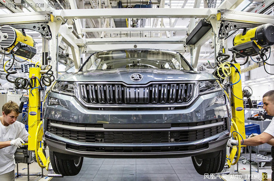
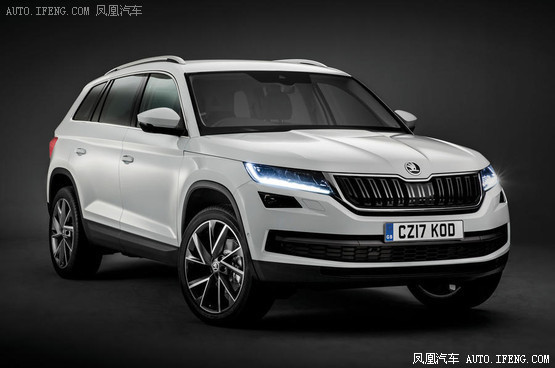
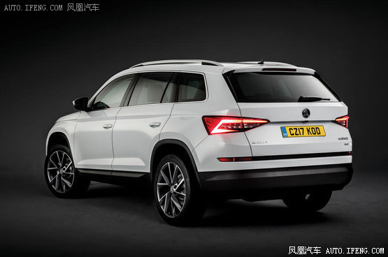

凤凰汽车讯 日前，斯柯达正式宣布旗下首款SUV Kodiaq正式开始投产，并且公布了新车的售价信息，新车将于今年11月份率先在英国上市销售，起售价为21495英镑(约合人民币17.73万元)。

在Kodiaq发布之前，斯柯达就投资了大量的资金来建设其在捷克的科瓦斯尼工厂，该工厂不仅用来进行生产Kodiaq，同时还用来装配速派和Yeti。该工厂目前拥有5000员工，在接下来的几年还需持续增加，实现产能翻倍的目标。

Kodiaq是在今年10月初举办的巴黎车展上正式亮相，并将于今年11月份针对英国市场开放订购，其起售价为21495英镑(约合人民币17.73万元)，预计将于明年四月份交付车主。新车标配有17英寸铝合金轮圈、真皮多功能方向盘、触屏式信息娱乐娱乐系统以及DAB收音机。

新车此次共推出S、SE、SE-L以及Edition四款车型，并提供五种不同动力引擎，其中有三款汽油发动机和两款柴油发动机。入门级车型搭载的是一款最大输出功率为123马力的1.4TSI发动机，随后该车型还有望新增一款2.0升柴油发动机。顶配车型同样提供1.4升TSI引擎和2.0升柴油引擎两款发动机可选，其售价分别为30695英镑(约合人民币25.3万元)和34895英镑(约合人民币28.8万元)。
[责任编辑： LA575]
返回首页